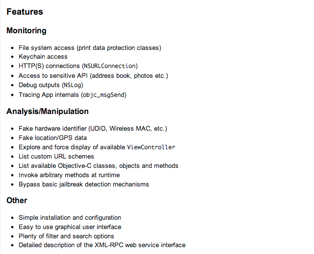
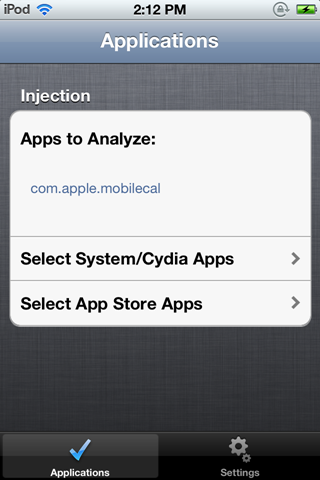
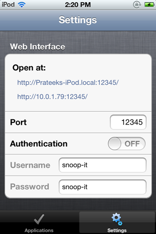
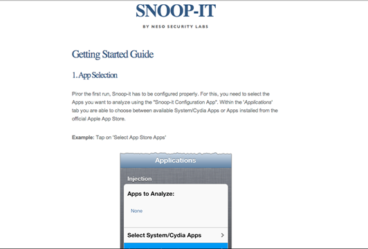
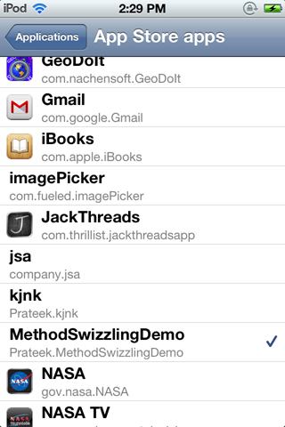
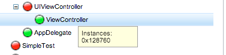
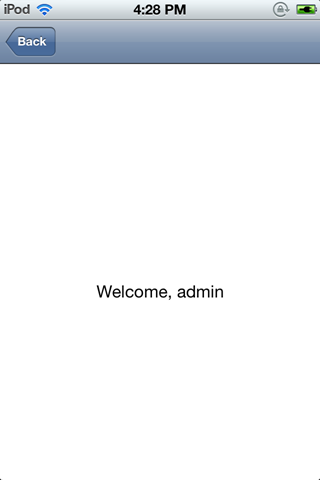

In some of the previous articles, we have looked at how we can dump class information of IOS apps using class-dump-z, hook into the runtime using Cycript and perform runtime manipulation and method swizzling, analyze the flow of the app using gdb etc. However, there could be a much better way of doing these things. We shouldn’t be using seperate tools for all these tasks. It would be great if a tool could perform all these tasks and at the same time display the information in a much more presentable way.
Snoop-it is a tool that solves these problems. It allows for runtime analysis and blackbox security assessment of IOS apps by retrofitting existing apps with debugging and runtime tracing capabilities. It also provides a very neat web interface. At the time of writing of this article, Snoop-it is not released yet but is a couple of weeks away from launch. I mailed the authors and they were nice enough to provide me with a beta version for testing. You can check out its official page here or you can follow the author on Twitter
A quick list of all the features provided by Snoop-it could be seen in the screenshot below taken from its official page. 
Installation
To install Snoop-it on your device, you will have to download the deb package file and then upload it on your device using sftp. Once this is done, use the command dpkg -i [packageName] to install Snoop-it on your device. Once this is done, respring or reboot your device.
Click to Enlarge
Once this is done, you will see the Snoop-it app icon on your device. Open it up and you will see this user interface.

Go to Settings and configure the app according to your need. In this case, i have chosen the port number to be 12345 and i have also disabled the authentication. It might be a good idea however to have the authentication enabled if you are testing on a network with lots of users, or a network with a few naughty users.

Now, just open the Snoop-it web interface by browsing to the address provided on the Snoop-it application. In my case, the address is http://10.0.1.79:12345

You will see this web interface. If you read it up, its asking you to select an application that needs to be analyzed from the Snoop-it application, open it up on the device, and then refresh this web interface. So let’s go back to the Snoop-it application and select the applications that we need to analyze. In my case, i am going to select the MethodSwizzlingDemo app, the same app that we used in the previous article.

Now, make sure that the app is opened on your device and in foreground and now refresh the Snoop-it web interface.
Click to Enlarge
And now as you can see, you have a beautiful interface now that you can use to perform a full fledged security assessment of the application.
Analysis
On the left hand side, under Analysis, go to Objective-C classes. On the right hand side, you will see all the classes and info like properties and method names.
Click to Enlarge
The ones in orange represent the classes that have instances. For e.g if you hover your mouse over the class View Controller, you will see that it has an instance which is live presently.

Similarly, you can see the methods and properties for AppDelegate.
Click to Enlarge
Coming back to view controller, it is possible for us to invoke a method using Snoop-it. Just check any particular method, and click on Setup and Invoke on the top right. As we saw in the previous article, with this technique we were able to bypass the authentication check for this application.
Click to Enlarge
Select the instace (there is only one now, but there could be multiple instances if the view controller is being reused across the application), and click on Invoke Method.
Click to Enlarge
This will invoke the method and will bypass the authentication.

Another awesome feature of Snoop-it is that we can switch to any View controller. For e.g, on the extreme left hand side, under Analysis, select View Controller, select the View Controller class on the right hand side and click on Display Controller. You will be switched to that view controller. You can also click on Close/Hide View Controllerdepending on whether the view controller is over another view controller or not.
Click to Enlarge
You can then tap on Reset display to come back. As you can understand, this feature will really help us relate the view controller to its view in the app. So if i have a view controller in the Classes section, i can use this feature to see its visual representation. I just love this feature of Snoop-it.
Runtime Manipulation
Snoop-it also allows for many ways of runtime manipulation, including changing your hardware identifier attributes like Mac address, UDID, device model number etc.
Click to Enlarge
You can also spoof your location. This could be particular useful for apps that use GeoEncryption techniques to protect their data.
Click to Enlarge
And, you can trace methods and system calls on the flow. Please note that you will have to click on Refresh on the top to see the method calls being made after every few seconds. Also, FYI since we are testing on a beta release it is possible that the authors may change it so that we don’t have to click on Refresh after every few seconds. This information might be a bit too much for some users, but if you have been developing IOS applications for a couple of years like me, then this information should be pretty much straightforward.
Click to Enlarge
Monitoring
Snoop-it also allows you to look at the various files and directories that are being accessed by the application. To do that, on the navigation menu on the left side, click on Filesystemunder Monitoring.This feature can be particular useful when a particular application is writing to a database file and this interface helps you in figuring out that filename. You can also download these files just by double clicking on them and then analyze it on your machine.
Click to Enlarge
You can also see all the access made by the application using sensitive API. This could include looking for info on the Address book, accessing the camera, or just finding the UDID for the device. Here is the sensitive API accessed by the App Store application which comes preinstalled on all IOS devices.
Click to Enlarge
We can also see all the information stored in the keychain by this application. Also, it is possible to see a list of all HTTP requests sent using NSURLConnection. Both of these features can be accessed under the navigation menu under Monitoring. I leave it up to you to try these features out. Also, we will be discussing how to dump information from keychain in a seperate article.
You will be happy to know that Snoop-it has a public API that we can make use of in order to automate tests or just to build our own graphical user interface. A documentation of the XML-RPC web service API can be found here
Conclusion
In this article, we looked at how we can we can use Snoop-it to perform runtime analysis and black box security assessment of IOS Applications and how easy it makes our task. Snoop-it is still a few weeks away from release at the time of writing this article, though you can always mail the author for a beta version like i did. One of the new features that i would like added in Snoop-it is the ability to perform Method Swizzling.I am pretty sure it will be an awesome tool for anyone interested in performing security analysis of IOS Applications and it’s only going to get better :)